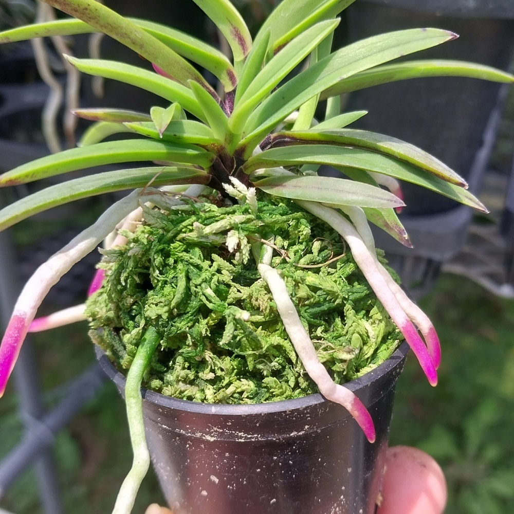
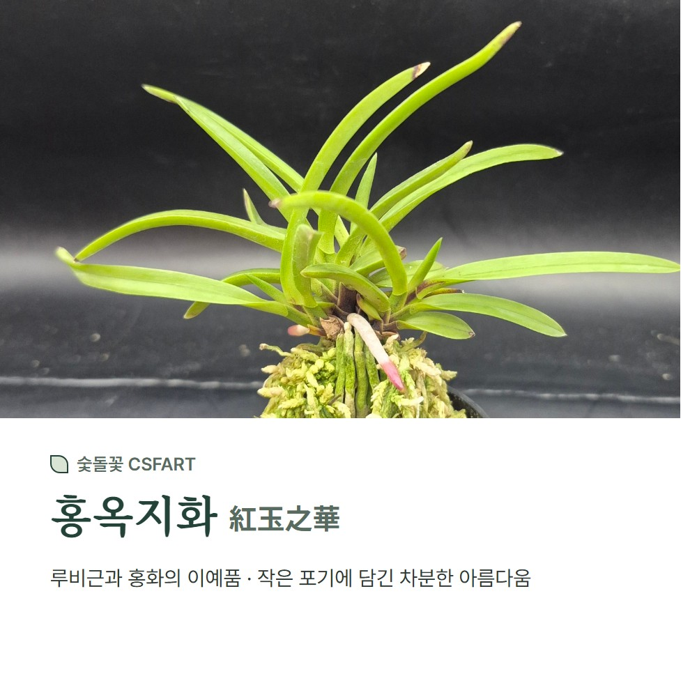
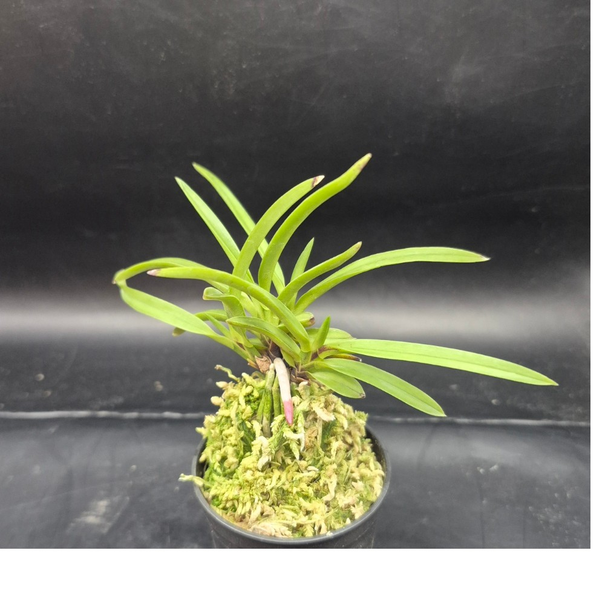
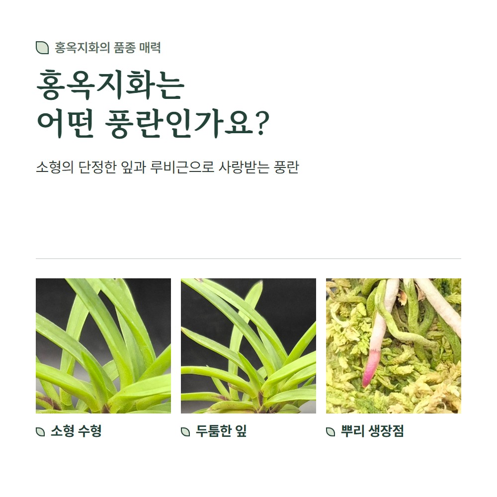
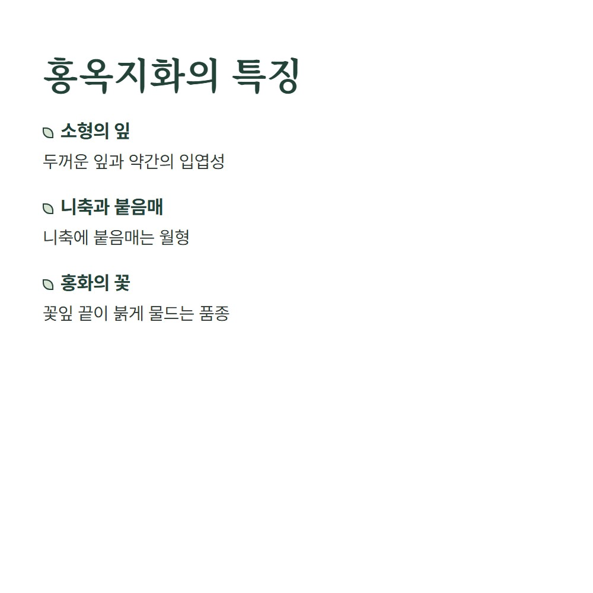
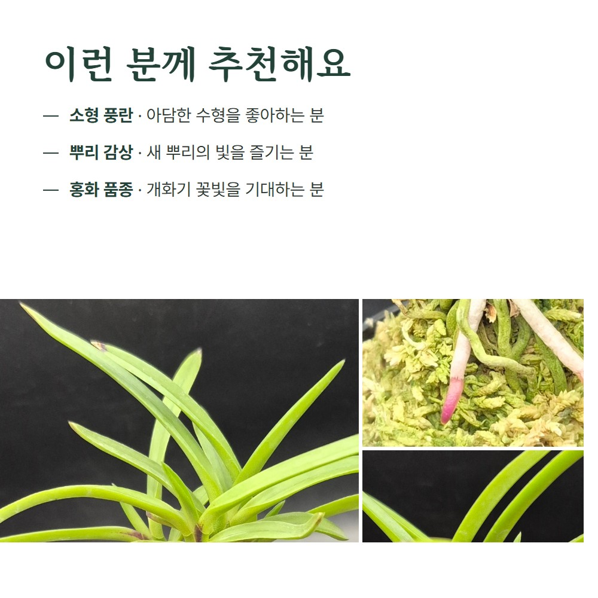
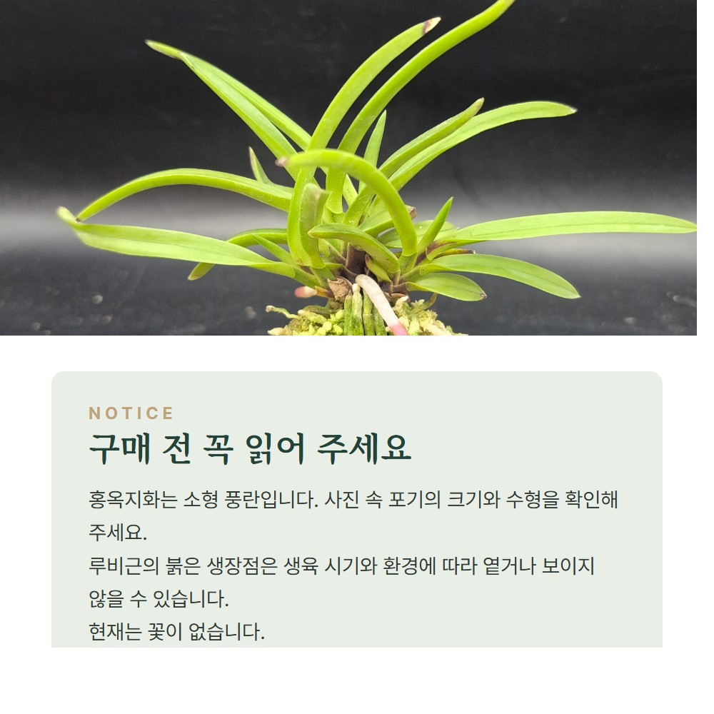
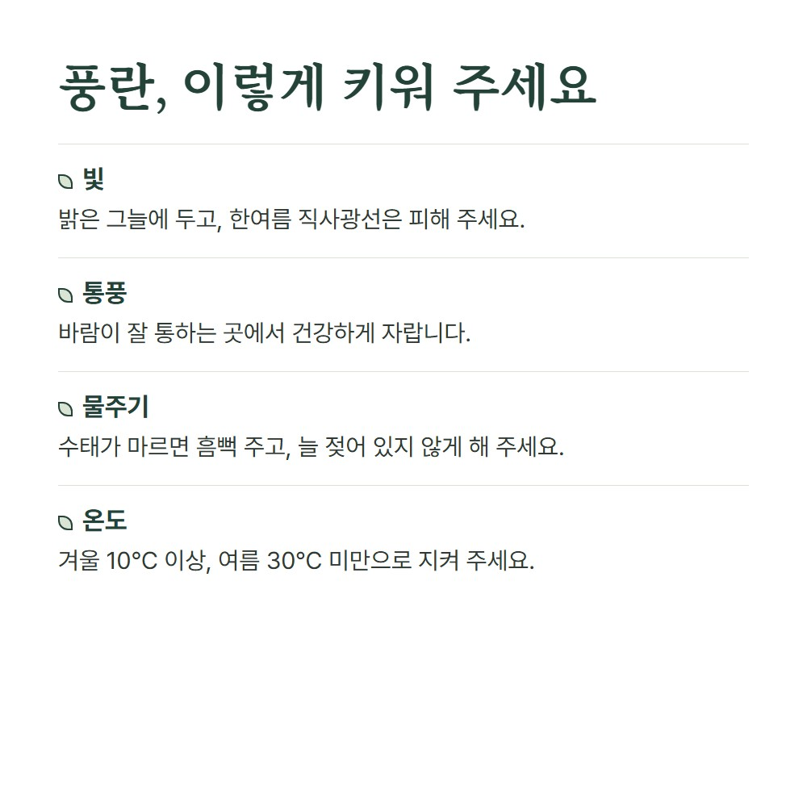

CSFART FLOWER COLLECTION
홍옥지화(紅玉之華) 0001
소형 풍란 · 홍화와 루비근의 이예품
20,000원
CSFART홍옥지화_0001 · 화물
작은 잎과 루비근, 홍옥지화의 아름다움
홍옥지화는 주천왕과 성성의 실생에서 선별된 소형 품종으로, 두툼한 잎과 약간의 입엽성이 특징입니다. 꽃잎 끝에 붉은빛이 드는 홍화와 뿌리 끝의 루비근을 감상할 수 있습니다.
사진 속 선명한 분홍 뿌리 끝은 새 뿌리가 자라는 시기에 나타나는 품종의 매력입니다. 생육 상태와 계절에 따라 색상이 옅거나 보이지 않을 수 있습니다.
현재 꽃이 없는 시기에는 잎과 뿌리의 모습을 감상하며 기를 수 있습니다. 사진 속 포기의 수형과 크기를 함께 확인해 주세요.
홍옥지화 0001 자세히 보기


사진과 품종 설명 더 보기











홍옥지화 기르기
밝은 그늘과 통풍이 잘되는 곳에서 기르고, 수태가 마른 뒤 충분히 물을 주세요. 강한 한여름 직사광선은 피하고 겨울 10℃ 이상, 여름 30℃ 미만으로 관리합니다.
홍옥지화 0001 구매하기
상품 구성과 재고는 각 판매처에서 확인해 주세요.